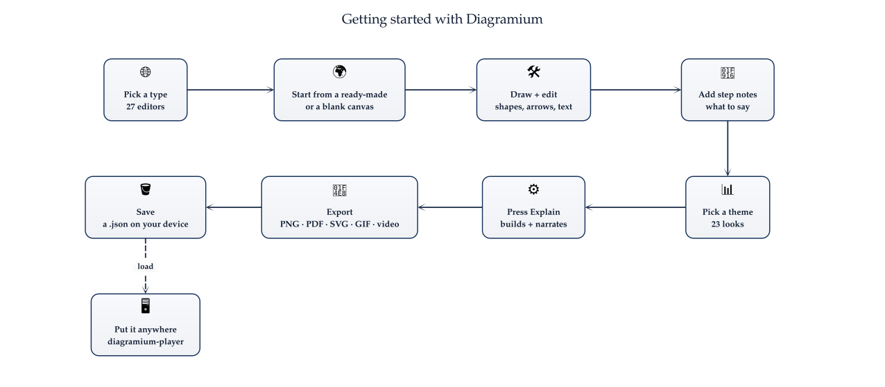

Getting started with Diagramium
From an empty page to a diagram that explains itself — and the file you can put anywhere. Nine steps, about five minutes.

1Pick a diagram type
Diagramium has a dedicated editor for each of 27 diagram types — sequence, flowchart, architecture, mind map, ER, UML class, swimlane, C4, BPMN, Gantt and more. Open one from Open an editor on the home page, or with Menu → New inside the editor.
No account needed. Everything below works the moment the page loads.
2Start from a ready-made
An empty editor opens on its ready-made diagrams — more than 1,500 across all types — with Blank canvas at the top of the list. Pick the one closest to what you need and change it; it is faster than starting from nothing. Explore and Search browse the whole collection.
3Draw and edit
Drag shapes from the library onto the canvas. To connect two shapes, drag from a dot on one shape's edge to the
other. Select a shape and just start typing to replace its label; double-click to edit it. ⌘Z undoes
anything.
Sequence diagrams are written as text instead — each line becomes a message:
Browser -> API: POST /checkout
API -> Payments: charge card
Payments --> API: approved4Add a note to each step
Every shape is a step of the explanation, in the order you added it — press O and click the shapes
in turn to change the order. In the notes, write what should be said at each step, and optionally a short
why this matters line shown beside it.
5Pick a theme
The Theme tab restyles the whole diagram in one click — 23 looks, from Executive Navy and Forest to Glassmorphism, Linear Midnight and Bento Card. Executive Navy and Forest need no account; the rest come with a free account. Colours you set on a shape yourself are kept.
6Press Explain
Explain plays your diagram full screen: shapes appear one at a time while your notes are read aloud by a
voice on your own device. ← and → step, Space pauses, Esc exits.
Record turns the show into a video file.
7Export it
Export asks one question first: an image or an animation. PNG, PDF and copying to the clipboard work for everyone. SVG, animated SVG, GIF and video come with a free account. An export can include the step notes and the legend beside the diagram.
8Save it
Menu → File → Save (⌘S) writes the diagram as a .json file on your device, and
Save as… (⇧⌘S) makes a copy under a new name. The toolbar shows which file you are working on.
Diagrams are never uploaded — they live in your browser and in your own files.
9Put it anywhere
That same .json is what diagramium-player plays: add it to a docs page, a blog post or a
product tour and control it from your own code. The animated version of this guide is one.
import { DiagramiumPlayer } from 'diagramium-player';
DiagramiumPlayer.fromUrl('/getting-started.json', { container: '#diagram' });